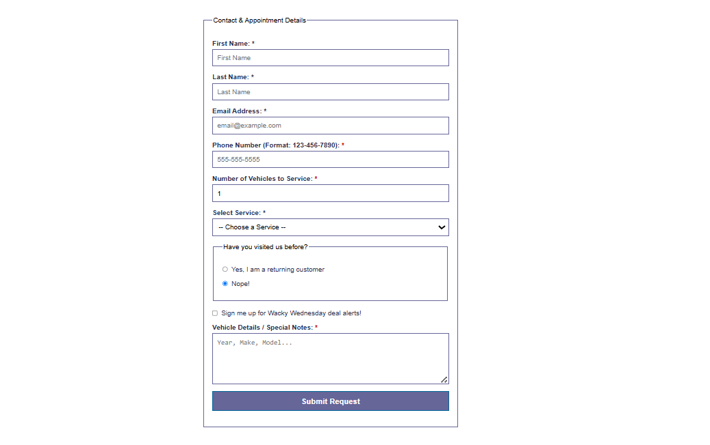
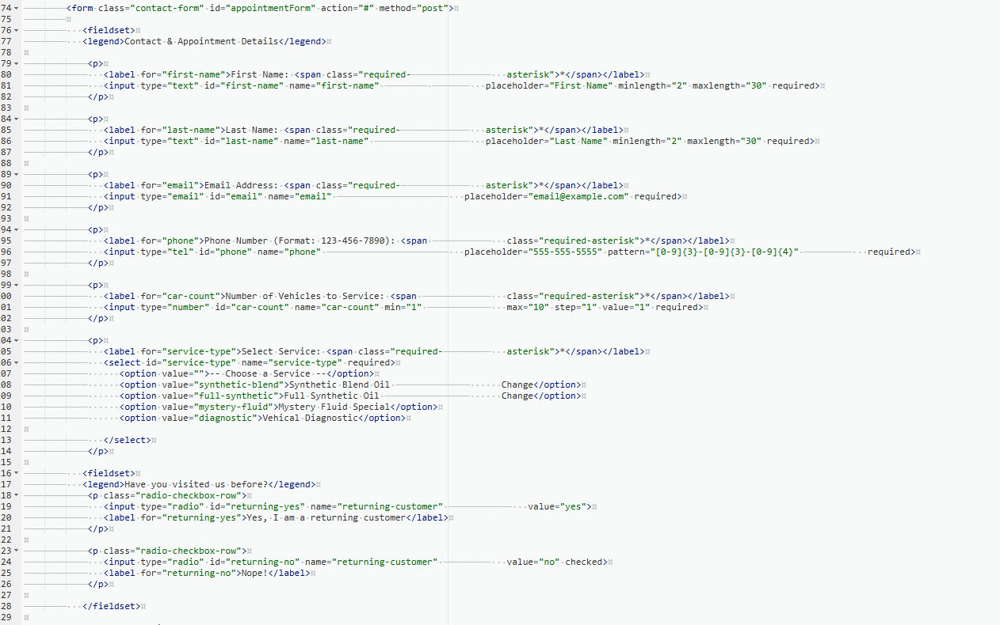

Web Development & Portfolio Projects
Project 1: Fictional Oil Change Shop Website
Overview: This was a website I had to design from scratch using raw HTML5 and CSS3 frameworks in a text editor as a project at Purdue Global. We started with rough mockup wireframes, moved to bulting the websites with HTML and CSS, and finalized them by checking accessability and SEO. This was my first attempt at building a website with raw code so it is not the prettiest but functionally it was a great starting point.
- Enforced a responsive web structure using native CSS Flexbox components.
- Used multiple types of inputs to build a web form
- Included Java script to verify form inputs
Project 2: Hand-Coded IT Portfolio Website
Overview: I built this multi-page, professional technical portfolio from scratch using raw HTML5 and CSS3 in a text editor. As my second extensive web project, this represents progress in structuring modular code, managing shared asset paths, and serving lightweight resources directly to users.
- Implemented a consistent, responsive style sheet framework mapping class structures across multiple pages.
- Deployed the solution live using public-facing hosting infrastructure and manual debugging.
Visual Documentation & Verification
Below are visual demonstration of the web layout page from my aforementioned oil change website. These images showcase user-facing input forms and the underlying clean code structure used to build them.
Interactive Web Form Layout

A view of the front-end user input form showcasing data entry fields.
HTML & CSS Code Structure

A backend snapshot ofthe code used to make the webform for appointments on my site.